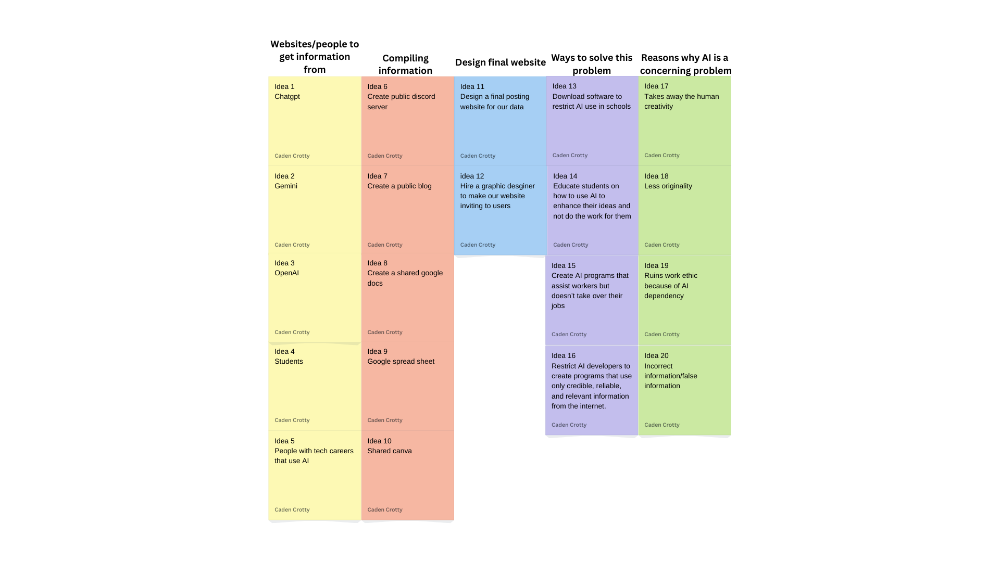
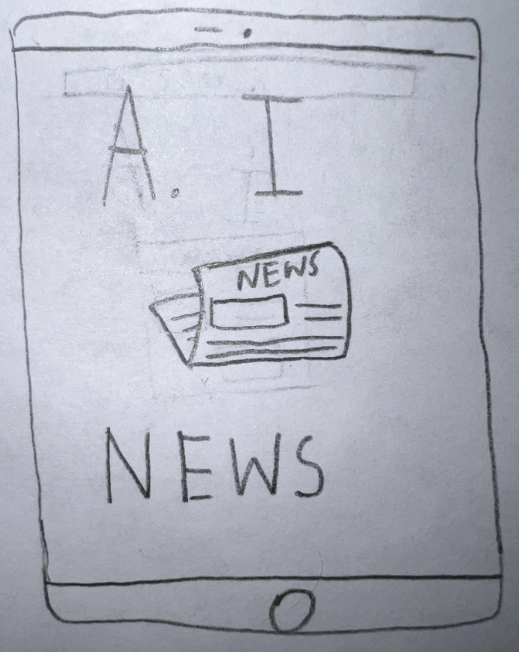

Hello! Welcome to my personal portfolio. My name is Caden Crotty, a freshman computer science student at the University of South Carolina.
I enjoy learning about computer programming and computers in general. My personal mission is to become the best version of myself and use my skills in a positive way.
Problem Statement

The use of AI needs to be reduced because of the lack of creativity, misinformation and loss of jobs.
Affinity Diagram

My group and I brainstormed ways to collect information about AI and the misuses that could arise from its use.
Affinity Diagram

These sketches show a rough draft of how a website using our problem statement could be used. (Based somewhat off of reddit)
Prototype

We created a prototype of our app by drawing screens that the user could encounter when interacting with our app.